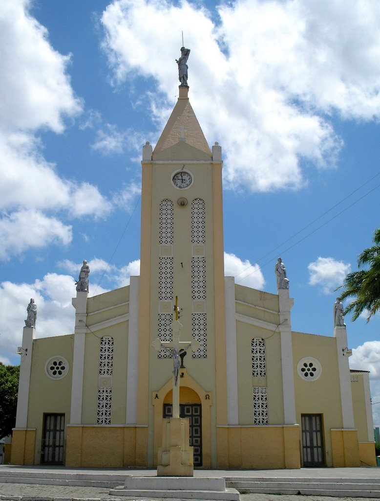
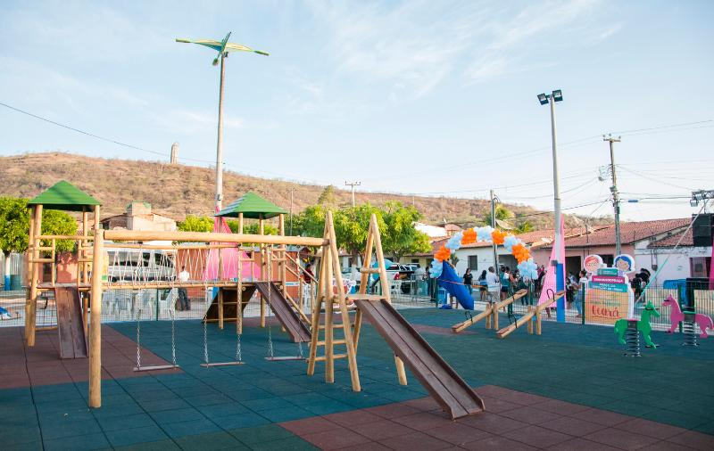

Informações técnicas sobre relevo, população, IDH etc.
| INFORMAÇÕES | |
|---|---|
| Municípios limítrofes | Norte: Boa Viagem e Quixeramobim, Leste: Senador Pompeu, Sul: Mombaça, Oeste: Independência e Tauá |
| Fundação | 9 de agosto de 1871 (149 anos) |
| Área total | 1 302,081 km² |
| Clima | Tropical semiárido brando |
| IDH | 0,605 — médio |
| PIB | R$ 290 181,92 mil |
| INFORMAÇÕES TERRITORIAIS | |
|---|---|
| Número de habitantes | 43.309 habitantes |
| Superfície de Pedra Branca |
130 328 hectares
1303,28 km² (503,20 sq mi) |
| Densidade populacional | 33,3 hab./km² |
| Altitude de Pedra Branca | 500 metros de altitude |
| Coordenadas geográficas decimais |
Latitude:
-5.45287
Longitude: -39.7097 |
| Coordenadas geográficas sexagesimais | Latitude: 5° 27' 10'' Sul , Longitude: 39° 42' 35'' Oeste |
| INFORMAÇÕES DO MUNICÍPIO | |
|---|---|
| Endereço da Prefeitura Municipal de Pedra Branca |
Pedra Branca
Prefeitura de Pedra Branca
Rua José Joaquim de Sousa, 10 PEDRA BRANCA - CE, 63630-000 Brasil Work +55 88 3515-2444 Fax (88) 3515-2435 |
| Telefone da prefeitura |
(88) 3515-2444
Internacional: +55 88 3515-2444 |
| Fax |
(88) 3515-2435
Internacional: +55 88 3515-2435 |
| Endereço eletrônico da prefeitura |
paulofilho.carvalho@bol.com.br
|
| Site oficial do município | pedrabranca.ce.gov.br |
| INFORMAÇÕES DO ADMINISTRATIVAS | ||
|---|---|---|
| Prefeito de Pedra Branca | ANTONIO GOIS MONTEIRO MENDES | |
| Partido politico | PSD | |
| INFORMAÇÕES DE TRANSPORTE | |
|---|---|
| Transporte urbano disponível | - |
| Aeroporto |
Aeroporto Internacional Pinto Martins
227.8 km
Aeroporto de Sobral
209.1 km
Aeroporto Regional do Cariri
202.5 km
|
| INFORMAÇÕES DE DISTÂNCIA A OUTRAS CIDADES | ||
|---|---|---|
| São Paulo : 2147 km | Rio de Janeiro : 1979 km | Brasília : 1459 km |
| Salvador : 847 km | Belo Horizonte : 1664 km | Manaus : 2270 km |
| Curitiba : 2446 km | Fortaleza : 232 km mais perto | Goiânia : 1626 km |
| Belém : 1073 km | Porto Alegre : 2991 km | Guarulhos : 2126 km |
| Campinas : 2097 km | São Luís : 605 km | Recife : 607 km |
| Distância calculada em linha reta! | ||
Conheça mais sobre a história de Pedra Branca.
No local conhecido por Tabuleiro da Peruca - havia uma pedra que chamava a atenção pela sua tonalidade clara, forma e dimensões peculiares. Na primeira metade do século XIX - vaqueiros e viajantes das redondezas - passaram a tomá-la como ponto de referência para seus encontros previamente combinados, ou não. Estes encontros em época remota, reunindo grupos relativamente pequenos, explicam a origem do nome do município de Pedra Branca.
Na região situada em torno do marco - representado pela pedra alva - foi fundado um povoado que rapidamente evoluiu em termos populacionais a partir da construção da capela de São Sebastião. No dia 20 de outubro de 1854 - como decorrência da Lei de Nº 883 - o povoado que já se mostrava devoto ao mesmo padroeiro do Rio de Janeiro, foi elevado à condição de distrito do município de Mombaça.
No dia 9 de agosto de 1871 a Lei de Nº 1.407, define a criação de novo município com sede no território onde estava situado o povoado de Pedra Branca que a partir daquela data passa a ser qualificado como vila.
Em 1931, entretanto, o Decreto Nº 193, de 20 de maio, declara extinto o município de Pedra Branca que por meio de um segundo decreto passa a figurar como distrito de Senador Pompeu.
A divergência envolvendo o território pedrabranquense é finalmente dirimida no dia 3 de maio de 1935 (por meio do Decreto de Nº 1540) que restaura, em definitivo, a autonomia política-administrativa de Pedra Branca. A emancipação municipal pedrabranquense é celebrada com base em 9 de agosto de 1871. Portanto, Pedra Branca este ano, completará 149 anos de emancipada. A paróquia local, cujo padroeiro é São Sebastião, foi criada no dia 23 de agosto de 1873, sendo nomeado seu primeiro vigário o Padre João do Nascimento e Sá.
Saiba mais sobre os melhores lugares e o que fazer em Pedra Branca.
Cachoeira do inferno
Igreja Matriz de Pedra Branca-CE
Brinquedopraça de Pedra Branca-CE
Veja como chegar nos melhores pontos de Pedra Branca.